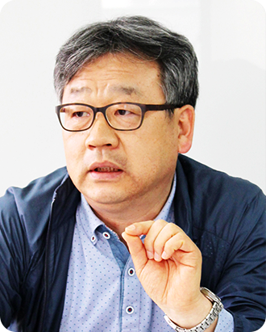

원장소개
홈
교육원 소개
원장소개

안녕하십니까?
한국고용노동교육원 홈페이지 방문을
한국고용노동교육원 홈페이지 방문을
진심으로 환영합니다.
한국고용노동교육원은 고용·노동 분야의 전문적이고 체계적인 교육을 통해 국가 고용창출에 이바지하고, 고용노동문제의 올바른 이해와 문제 해결력을 높이기 위해 설립된 교육기관입니다.
한국고용노동교육원은 고용노동부 근로감독관 직무교육과 공무원·교원·공공기관 등 공공부문 고용노동교육, 그리고 고용노동교육의 수혜를 받지 못하는 취약계층 노사에 대한 교육훈련을 수행하고 있습니다.
원장
-
변화 선도
변화를 선도하는
교육원이 되겠습니다.변화의 소용돌이 속에서 '변화가 곧 생존' 인 이 시대에 미래를 주도할 역량과 사고 를 갖춘 인적자원을 개발하여 변화를 선도하겠습니다.
-
희망의 씨앗
희망의 씨앗을 심는
교육원이 되겠습니다.아름다운 꿈을 키워가는 행복한 직장문 화 형성을 통해 교육원을 방문하는 모든 교육생들이 행복의 열매를 수확할 수 있 는 희망의 씨앗을 심는 교육원이 되겠습 니다.
-
열린 교육원
열린 교육원이
되겠습니다.교육원은 고용노동교육이 필요한 곳이 라면 어디든 찾아가는 현장교육, 현업에 서 즉시 활용할 수 있는 실무중심의 교육 그리고 고객이 원하는 정보를 상시 제공 하는 열린 교육원이 되겠습니다.
프로필
학력
- 연세대학교 사회학과 학사
- 가톨릭대학교 사회학 석사
- 성공회대학교 산업사회학 박사 수료
경력
- 2013.02 ~ 2020.09 한국노동사회연구소 소장
- 2018.12 ~ 2020.09 공공기관운영위원회 위원
- 2018.06 ~ 2020.09 대통령직속 정책기획위원회 자문위원
- 2017.10 ~ 2020.09 서울특별시 투자출연기관 노사정협의회 위원장
- 2017.10 ~ 2020.09 (재단법인) 공공상생연대기금 이사
- 2017.12 ~ 2020.09 고용노동부 정책자문위원
- 2013.05 ~ 2018.09 국가인권위원회 사회권 전문위원회
- 2020.05 ~ 2022.06 기간산업안정기금 운용심의회 위원
- 2020.06 ~ 2021.12 경제사회노동위원회 관광산업위원회 위원장
- 2016.03 ~ 현재한국고용노사관계학회 부회장
경력
- 『노동의 희망 찾기: 21세기 노동교육』 2000, 한국노동사회연구·프리드리히 에버트재단, (공저)
- 『기업의 사회적 책임 CSR』 2007, 한국노동사회연구소, (공저)
- 『공공부문 노동조합조직현황 및 단체교섭사례연구』 2008, 한국노동연구원, (공저)
- 『교원노조 단체교섭 해외사례 연구』 2012, 서울시교육청, (공저)
- 『공공부문 노정교섭(정책협의) 제도화 방안 2017, 고대 노동문제연구소, (공저)
- 『The Evolution of Korean Industrial and Employment Relations』 2018, Edward Elgar Publishing Ltd, (공저)